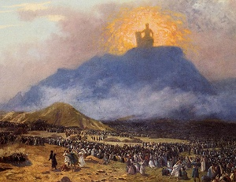

Sacred Texts Bible Critical Views
Buy this Book at Amazon.com
|

Moses on Mount Sinai, by Jean-Leon Gerome [19th cent.] (Public Domain Image) |
Prolegomena to the History of Ancient Israelby Julius Wellhausen[1885] |
Wellhausen's theories about the development of the Old Testament are for Biblical criticism what Einstein is to physics. Wellhausen devised a new paradigm which explained many of the apparent inconsistencies in the Biblical texts. In the process, he upset many traditionalists who didn't like the concept that the early portions of the Bible were the product of four separate authors. Or that the Levitical code was redacted into the text by the priestly class at a very late date in the evolution of the Bible. Or that the Bible even evolved...
He has continued relevance. Wellhausen's theories have been built on by contemporary scholars. The current Christian fundamentalist movement emerged as a response to the Biblical criticism of Wellhausen and other 19th century scholars. Wellhausen remains difficult to fully grasp by all but those schooled in the ways of the Documentary hypothesis. However, brave readers willing to attempt an expedition through the Prolegomena will be richly rewarded, whichever side of the cultural divide you fall on.
Production Notes: This was originally published in German in 1883 as Geschichte Israels, and then as Prolegomena zur Geschichte Israels in 1883, The existing etext of this book in Project Gutenberg was re-proofed using a printed facsimile of the 1885 English translation (New York: Meridian Books [1957]). This included two separate word-by-word proof passes, one of which was a comprehensive spell-check. Unicode Hebrew and Greek text was added, numerous errors in the etext were corrected, and pagination was inserted. Lastly, the index, lacking in the PG etext, was scanned, proofed and appended.
--J.B. Hare, Dec. 31, 2007